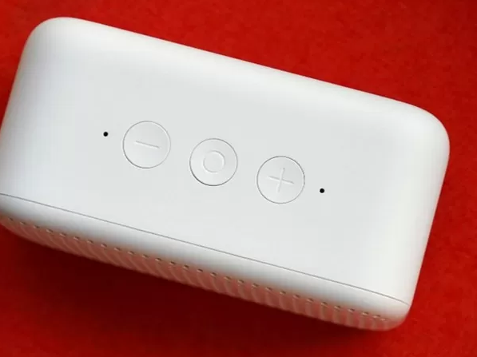

Пропонуємо познайомитися з цікавим апаратом ближче, вивчити його технічні можливості і доступні функції.
Гаджет упаковується акуратно, в коробці є амортизуючі вставки. Всередині упаковки знаходяться також кабель для підключення до мережі, гарантійний талон та інструкція з експлуатації.
Модель представлена в чотирьох кольорах: це білий, салатовий, рожевий і блакитний кольори. Корпус зроблений з міцного пластику у вигляді цілісного моноблока прямокутної форми із закругленими краями.
Лицьова частина являє собою перфоровану поверхню, по якій рівномірно розподілені круглі отвори. По центру розташовуються світлодіодні елементи, які активуються при включенні пристрою. П’ять світлодіодів вміють змінювати свій відтінок, що дозволяє створювати цікаві світлові комбінації.
На зворотному боці знаходиться тільки роз’єм, який потрібен для підключення кабелю. Зверніть увагу, що автономна робота Xiaomi Redmi Xiao Ai Speaker Play не передбачена: потрібне постійне підключення до мережі. Задня кришка виготовлена з суцільного глянсового пластика.
Для забезпечення стійкого становища на горизонтальній поверхні було вирішено розмістити на підставі дві прогумовані ніжки. Таке рішення сприяє запобіганню ймовірності появи вібрацій і деренчання, якщо звук буде встановлений на максимальні значення.
Кнопки розмістилися на верхньому торці. Це три механічні клавіші ввігнутої форми, у кожної з яких є власний візерунок. Це дозволяє при дотику до них, не дивлячись, розуміти, за яку функцію вони відповідають.
Перша кнопка відповідає за зменшення рівня гучності, друга – за включення / вимикання мікрофона при одноразовому натисканні. Тривале утримання (5 секунд) призводить до доступу в «Налаштування». Якщо утримувати більше 10 секунд, то станеться відкат до заводських налаштувань. Третя кнопка збільшує гучність. У Redmi Xiao Ai Speaker Play встановлено динамік 1,75 дюймів з підтримкою технології CrystalWave, а обсяг акустичної камери досягає 350 см2. Звичайно, це помітно менше, ніж в розумній колонці Xiaomi Mi AI Speaker Pro, але все одно якість звуку можна назвати гідним
Середні і високі ноти чутні чітко, без найменших спотворень. Досить добре прослуховуються баси, сторонній шум і перешкоди не помічені. Це досягається завдяки U-подібної повітряної трубці, яка створює ефект «звукового лабіринту». Це дозволяє збільшити насиченість нижніх частот на 30% в порівнянні з традиційними конструкціями.
Передбачена можливість використання пристрою для організації гучного зв’язку, в тому числі конференцій. Для цього розумна колонка Сяомей підключається до смартфону по Bluetooth 4.2 або Wi-Fi802.11 b / g / n, 2.4 ГГц за допомогою фірмового додатка Mi Home. Активація гучного зв’язку здійснюється одноразовим натисканням на центральну кнопку управління.
Відмінним рішенням стала підтримка функції інтеграції в систему розумного будинку. Пристрій уміє працювати з технікою від 54 виробників, тому кількість девайсів, доступних для синхронізації, становить понад 2 тисячі.
Приємний бонус для тих, хто володіє китайською мовою: в Xiaomi Redmi Xiao Ai Speaker Play реалізована опція голосового управління. На даний момент версії прошивки англійською або російською мовою поки не передбачено.